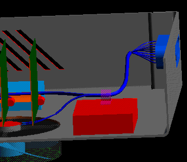
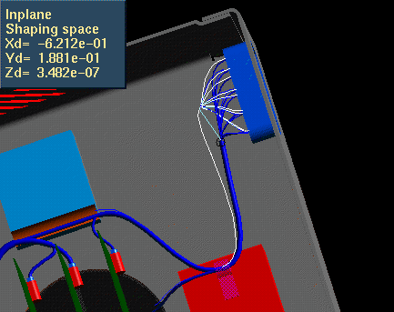

This example shows how VGx is applied to the design of a wire harness. The user can drag points on the wires and pull the wire around and thanks to the underlying VGx, the wires will remain smooth.
Model file :- VGx_Harness.mf*
After





Use the Drag Point icon to drag the wire end (CC53).
Tech Tips
Make sure you use the Drag Point icon from the Harness Design shape tear off icon panel, the Drag will let you do the first operation but not the second.